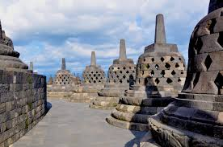
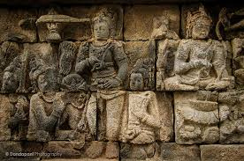
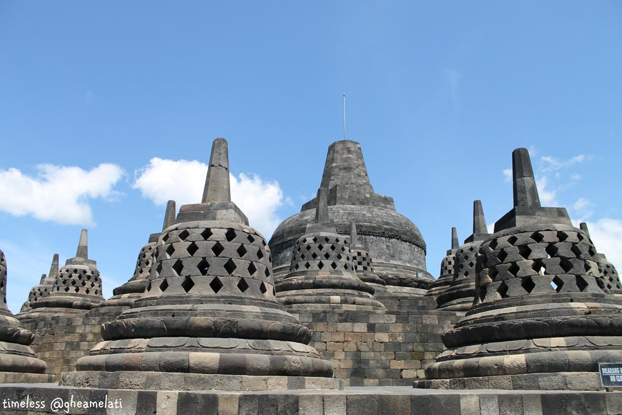
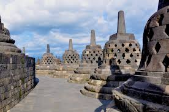
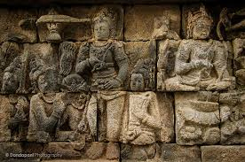
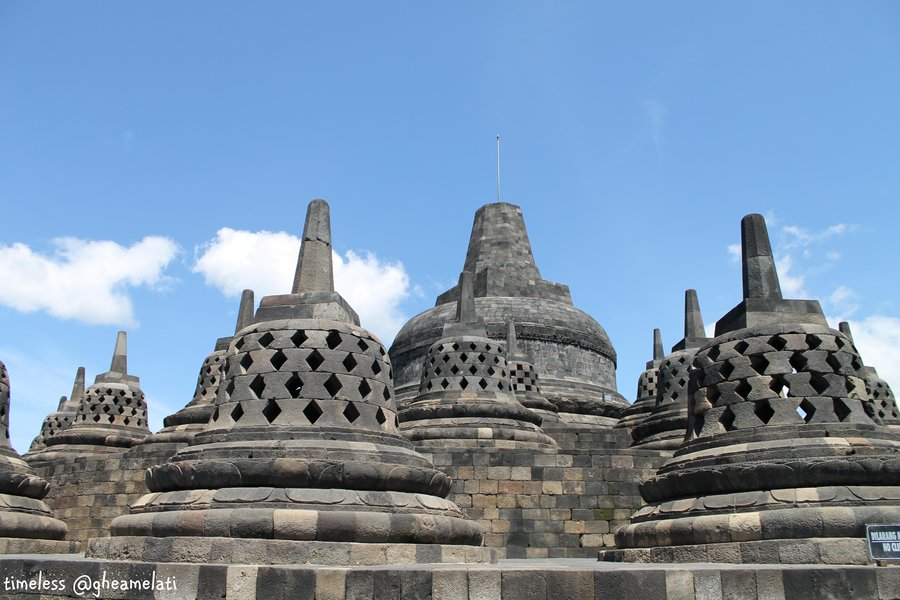

ABOUT IVAN
If you'd like to find out more about my skills, you've come to the right place. First, I'd like to introduce myself. My name is Ivan Setiawan. I was born in a small town in Indonesia, Kediri. The city is in the province of East Java on the island of Java. According to archeologists, Kediri may have been the location of the Kediri kingdom , a Hindu kingdom in the 11th century. Kediri is now a major trade centre for the Indonesian sugar and cigarette industry. My grandpa and my grandma with my uncle are currently living in this city. Everytime I go back to visit Indonesia, I will always go to Kediri. This city really brings back my childhood memory. Here's a map of Kediri, Indonesia.
At the age of 8, I moved to another city, Jogjakarta. It is located in the middle of Java island.
Yogyakarta is a city and the capital of Yogyakarta Special Region in Java, Indonesia. It is renowned as a center
of education (Kota Pelajar), classical Javanese fine art and culture such as batik, ballet, drama, music, poetry,
and puppet shows. Yogyakarta was the Indonesian capital during the Indonesian National Revolution from 1945 to 1949.
Yogjakarta is very famous of its culture. The most famous landmark in Jogjakarta is Borobudur Temple.
It is a UNESCO world heritage site. Borobudur temple is a 9th-century Mahayana Buddhist Temple.
The monument consists of six square platforms topped by three circular platforms and is decorated with
2,672 relief panels and 504 Buddha statues.
A main dome, located at the center of the top platform, is surrounded by 72 Buddha statues each of
which is seated inside a perforated stupa. It is the world’s largest Buddhist temple,
as well as one of the greatest Buddhist monuments in the world. Here're some pictures about Borobudur Temple.
Here are some images of the Borobudur Temple.
 





I spend the rest of my childhood and my teens in Indonesia. After high school, I went to USA to pursue my education
in Electrical Engineering. I went to Foothill-De Anza Community College before going to the University. After spending
2 years in college, I moved to the University of Illinois at Champaign-Urbana. During my undergrad, I involved in many
different projects and individual projects. You can find some of my works on the
Soon after I finished my Bachelor, I took a Master program in Technology Management. In this program, I
learn how to take initiate, anticipate, and respond to fast-evolving technological challenges that define today's successful
businesses. In my second semester, I got an internship at Monsanto Company as an
Aside from doing programming, I like watching and playing soccer. My favorite team is Liverpool F.C. They are not doing really good for the past couple seasons, but I really hope they can be a title challenger next season. I also like playing video games online. I have a handheld PS Vita. My favorite genre is Platform game, which the player guide the character to jump between platforms, over obstacles, run, and collect items to advance the game. My favorite platform games are Megaman X Series and Rayman Series.
I also like playing action strategy team based game, Dota 2 game via Steam. I am not a very good player, but I say I am a decent player at the game. I typically like playing support role because I don't consider myself as a greedy player. Sometimes, I also play carry role. You can check my Dota 2 account at: http://www.dotabuff.com/players/125743680. Please add me as a friend if you want to play with me.